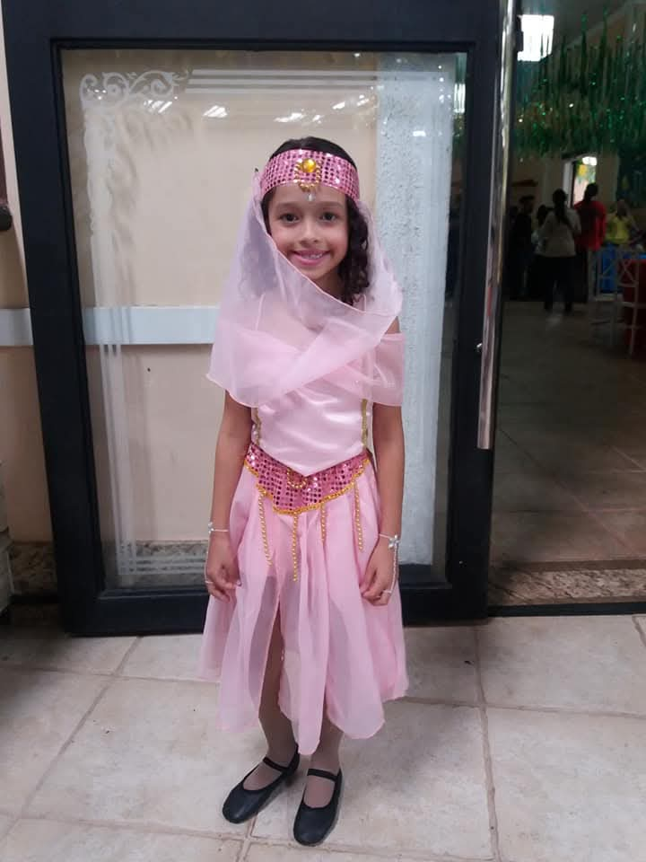
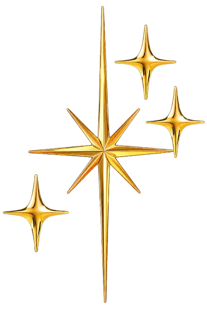

Rotina movimentada
Gosto de ter a rotina bem cheia, porque me sinto muito mais produtiva quando estou ocupada.




Me chamo Maria Eduarda, tenho 15 anos e atualmente curso Desenvolvimento de Sistemas no Instituto J&F. Sou uma pessoa curiosa, determinada e que gosta de estar sempre aprendendo algo novo. Tenho interesse pela área de tecnologia, principalmente pela possibilidade de transformar ideias em soluções e desenvolver projetos que possam fazer a diferença.
Gosto muito de escutar música e não tenho um artista ou estilo musical favorito, já que estou sempre aberta a conhecer coisas novas. Também gosto de pintar, ler e escrever, atividades que me permitem explorar minha criatividade e expressar minhas ideias. Recentemente, voltei a praticar ballet, depois de um ano sem dançar. É uma atividade pela qual tenho muito carinho e que me ensina sobre disciplina, dedicação e persistência. Também gosto muito de teatro e da sensação de estar no palco, além de assistir a filmes, principalmente comédias românticas.
Sou uma pessoa que gosta de ter uma rotina movimentada, conhecer coisas diferentes e aproveitar oportunidades que me permitam desenvolver novas habilidades. Também amo viajar, conhecer novos lugares, culturas e paisagens, pois acredito que cada viagem proporciona experiências e aprendizados únicos. Além disso, gosto muito de passar tempo com minha família, pois valorizo os momentos e as experiências que compartilhamos. Acredito que cada experiência, mesmo as mais simples, pode trazer algum aprendizado.


Gosto de ter a rotina bem cheia, porque me sinto muito mais produtiva quando estou ocupada.
Busco sempre me envolver em atividades que gosto e que me dão a oportunidade de aprender coisas novas.
Desde pequena, tenho o sonho (meio irreal) de ter um zoológico voltado principalmente para aves, já que sempre gostei de animais e acho fascinante aprender sobre diferentes espécies.


Tenho vontade de conhecer por conta da sua cultura diferente, da tecnologia e das paisagens.

Tenho vontade de conhecer pela moda, já que o país é referência mundial na área, e principalmente pelos pontos turísticos famosos.

Tenho vontade de conhecer pelas praias, pela cultura e por achar que seria um lugar com clima tranquilo.
"Você pensa que nunca vai esquecer, e esquece. Você pensa que essa dor nunca vai passar, mas passa. Você pensa que tudo é eterno, mas não é."
— Clarice Lispector